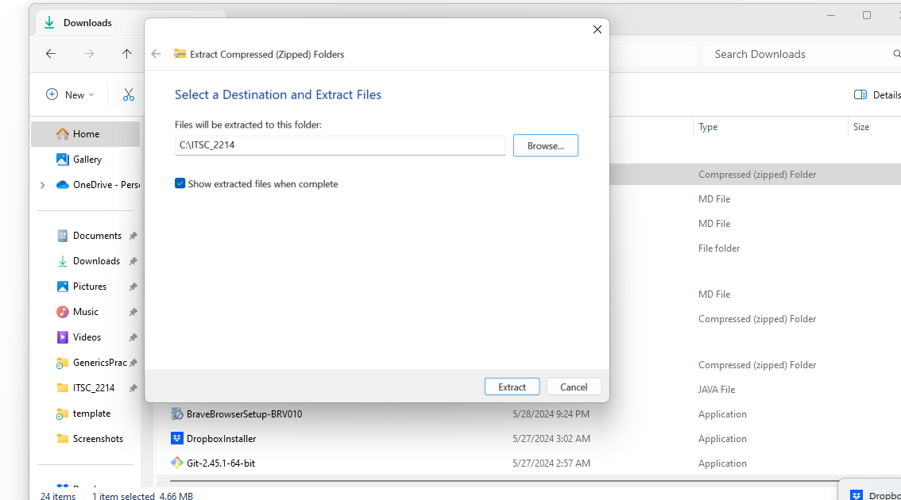
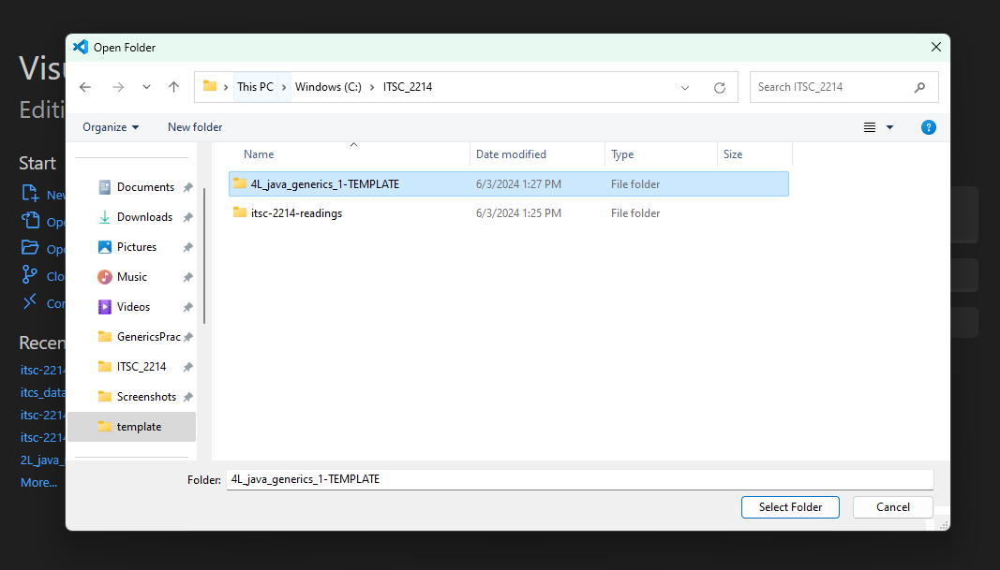

7 6L. Writing JUnit Tests - 1
7.1 Pre-requisites
Please go through the writing JUnit tests chapter, mutation testing chapter, the List of Mutators chapter, and the slides on Mutation Testing from the lecture.
7.2 Project Overview
Here is the list of files in the Calculator Package:
.
├── src
│ ├── Calculator
│ │ └── Calculator.java
└── test
└── Calculator
└── CalculatorTest.java7.3 Detailed Instructions
The
Calculator.Calculatorclass is fully implemented and contains a list of methods for each basic arithmetic operation. The only method that is different from what you’d expect isdivide(), which throws an exception if someone tries to divide by zero. This is interesting because when you write tests, you will have to make sure your test tests the fact that exceptions are being thrown when expected and not being thrown when not expected.The
Calculator.CalculatorTestclass insidetest/Calculator/CalculatorTest.javais empty. Let’s talk about how to start writing this class.In order to be able to write tests, you need to import a bunch of methods called assertions from a library called JUnit. Here are some example assert methods:
assertEquals: takes two arguments, and checks if they are equal. If unequal, the test fails.assertThrows: takes two arguments, the first being a class, and the second being a lambda expression.
You can get the class of an exception by using
Exception.class, for example,ArithmeticException.classorjava.lang.ArithmeticException.classif you’ve not imported it.The lambda expression should include the method call that should throw an exception. You can think of it as a small convenient try block, for example:
assertThrows(ArithmeticException.class, () -> c1.divide()); // or if you need multiple statements assertThrows(ArithmeticException.class, () -> { Calculator c1 = new Calculator(1, 2); c1.divide(); });See Assertions (JUnit 5.0.1 API) for documentation on all assertions. You might be able to find something that reduces the amount of code you need to write!
We are using JUnit 5, and the way you import these assertions for JUnit 5 is:
import static org.junit.jupiter.api.Assertions.*;Note: Make sure you’ve added
package Calculator;to the top of theCalculator.CalculatorTestclass file.Every method that is meant to be a test needs to be marked with a
@Testdecorator. This helps our tool find and identify which methods are intended to be tests. You can import this decorator by saying:import org.junit.jupiter.api.Test;Later, you can mark a method as a test by saying:
@Test public void testAdd() { // body }You might also want to import
java.lang.ArithmeticException, that is the exception thrown by the divide method.Next, create a class as usual:
public class CalculatorTest {}Inside this class, define a bunch of calculator objects. Here are some you might find useful:
public class CalculatorTest { /* * Here is where you want to define a bunch of calculator objects * So that you can use them later in your tests. * * The instructions document contains a list of calculator objects * that might be useful to test. * * You can also create your own calculator objects. */ Calculator c1 = new Calculator(2, 3); Calculator c2 = new Calculator(-2, 3); Calculator c3 = new Calculator(2, -3); Calculator c4 = new Calculator(-2, -3); Calculator c5 = new Calculator(0, 0); Calculator c6 = new Calculator(0, 3); Calculator c7 = new Calculator(2, 0); Calculator c8 = new Calculator(0, -3); Calculator c9 = new Calculator(-2, 0); }Next, use the
@Testdecorator just like how it was described above to create:testAdd()testSubtract()testMultiply()testDivide()
Implement all the above tests, and run them to make sure they’re all passing.
Once your tests are passing, use the above instructions to check your grade within the IDE.
Make sure you modify your tests or source code to get rid of all surviving mutations. Once you are done, hit submit.
7.4 Rubric
- Unit tests for
Calculator.Calculatorshould pass (10 points) - There should be no surviving mutants. Points are only awarded for no surviving mutations (40 points)
7.5 Project Files
7.6 Opening Project in Visual Studio Code
Download the project files from
Unzip the files to preferably an
ITSC 2214folder for this class. You must have created this folder before for previous labs. Launch Visual Studio Code. Go to File > Open Folder…, navigate and select the folder where you have extracted the zip file. 
7.7 Update the autograder
First, please update your autograder by running:
umm update7.8 Checking Autograder Feedback
You can check your grade locally by following these steps:
Open a terminal. To open a terminal in Visual Studio Code on different operating systems:
Windows: Press ” Ctrl + ` ” or ” Ctrl + Shift + ` ” to open the integrated terminal.
Mac: Press ” Cmd + ` ” or ” Cmd + Shift + ` ” to open the integrated terminal.
Run the command:
umm grade ./script.rhai
7.9 Submitting your Project
When you are ready to submit your assignment:
Open a terminal. To open a terminal in Visual Studio Code on different operating systems:
Windows: Press ” Ctrl + ` ” or ” Ctrl + Shift + ` ” to open the integrated terminal.
Mac: Press ” Cmd + ` ” or ” Cmd + Shift + ` ” to open the integrated terminal.
You can copy and run the
umm create-submissioncommand in the terminal, and that should create a zip file with a name similar tosubmission-2024-01-24-15-04-50.zip.umm create-submissionSubmit the
submission-2024-... .zipfile to Gradescope. The submission zip file will appear in the file explorer tab of VS Code. You can right click on this file and click on reveal in explorer (windows) or reveal in finder (mac) in order to find this file. then, you can drag and drop this to gradescope for submission.